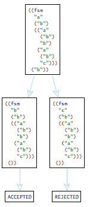

| Important Messages from the Instructor
Friday, November 16th, 2012
Assignment 10 is graded. The average grade is 87% (an A), with a range of
15/15 to 9/15.
You lost points if your submission had the wrong format (not a tar file),
your program does not read from standard input or write to standard output,
your program needed an X display,
or
your program failed some tests.
By now, you should have received an annotated copy of your README file
and a status report on your grades.
Thursday, November 15th, 2012
| A student asks ... | The answer is ... |
|---|
Can we assume that we will never be given an sexpr with free variables?
|
Yes.
|
Saturday, November 10th, 2012
I have revised the project page to refine the specification for the final
steps of the project. -- As some of you have noticed, I have also started
arranging a presentation schedule. I will list the remaining talks next
week, when I have obtained a room for an afternoon session. [There are
more people in class than presentation slots, given the normal lecture
schedule.]
Friday, November 9th, 2012
Assignment 9 is graded. The average grade is 88% (an A), with a range of
12/12 to 8/12.
Problem 3 on this problem set is a mini-case study of problem set 10.
See lecture this morning.
Some of you chose to revise the CEK machine in a non-traditional manner.
See lecture this morning for the standard solution in this setting.
Wednesday, November 7th, 2012
Phillip pointed out a mistake in problem 2 of set 9. It is correct now
(red color).
Tuesday, November 6th, 2012
| A student asks ... | The answer is ... |
|---|
|
|
Should the result metafunction be able to produce error?
|
Yes. I have corrected 9-provided.rkt accordingly. Please download
and work with the new version.
|
Monday, November 5th, 2012
Assignment 8 is graded. The average grade is 91% (an A), with a range of
12/12 to 7/12. I have ignored organization problems this time, but
homework solutions with problems contain an "MF" labeled hint. Next time I
will punish such mistakes, too.
Thursday, November 1st, 2012
The project proposals are graded. The average grade is 80% (a B+), with a
range of 20/20 to 12/20.
The grade consists of four parts: content (6), English writing (12), looks
(1) and "citation" (1). The last two are awarded for a precise
specification of the paper that you use for your project and type setting
style. I did not take off either of these two points, though two
submissions got really close. Based on this experience, I will refine the
project page to specify the format of the resubmission.
The content grade awards three points for a concise,
neutral, and correct summary of the paper. The proposal counts for an
additional three points. A good proposal consists of two parts: a goal
statement (what, specification) and an approach (how,
implementation). A goal can come as an indirect question and its
explanation [or as a conjecture and the reasoning that produced it]; an
approach spells out which tools (software, mathematics, measurements) you
will use and how you use them to answer the question [or validate the
conjecture]. -- Few of you are in a position to work with conjectures,
which is why these sentence fragments are in brackets.
The English writing grade judges memo organization,
paragraph organization, sentence organization, grammatical correctness,
and spelling.
Thursday, November 1st, 2012
This morning's email came with a pointer to
a
blog on models and uncertainty that I thought I should share with
you. After all, this course is primarily about turning undergraduates
(including MS students) into PhD-level researchers.
I consider the the
Modelers' Hippocratic Oath (bottom of the blog) of particular
interest. All too often, we forget that our models are highly inaccurate,
given the true size and complexity of our programs and programming
languages; our theorems about these models are not much more than a
"testing effort" that ensures some basic validity; and our measurement
efforts are not even fully repeatable at the precise data level.
In my opinion, all of the above applies to all other research areas within
computer science as much as it applies to programming languages, and for
the newer areas (almost all), it applies even more so.
Wednesday, October 31st, 2012
Alex and Fabian write:
So when we were using redex-check, we tracked down a typo you'd made in
8-provided: in the 2nd clause of no-binding-for, you
meant to say "d_u" but instead put "du". Took us a while to figure out what
was going wrong. ;)
This is correct. I had initially distinguished dt for typed
definitions from du for untyped definitions. To make your life
easy for the past problem set, I went back to plain d and
friends.
I have posted a revised version of 8-provided.rkt.
Wednesday, October 31st, 2012
| A student asks ... | The answer is ... |
|---|
In language sl+c, s is extended to include void. For
void input, the output result is also void But we found
that for void input, eval-s in 8-provided.rkt
gives contract violation, because r does not include void
in sl+c. What gives?
|
This question exhibits a mistunderstanding and a
mistake.
The purpose of separating simple-lang definitions from
sl+c definitions is to separate what the programmer writes down
(the former) and what we need to define additionally so that we can specify
a reduction semantics (the latter).
The mistake is to jump to the conclusion that void must be an
output (because it can show up in intermediate states). -- You can actually
-- prove that void cannot become a part of a result if it is only
added by reductions. (This is a good exercise.)
|
May we assume that inputs are well-formed (and implicitly well-typed if
types were provided)?
|
Yes. |
Tuesday, October 30th, 2012
| A student asks ... | The answer is ... |
|---|
|
|
The sl+c language defines the E as a hole or (+ e E) or a (+ E e). This
leads to parallel paths when we have multiple references in the '+'
expressions. Shouldn't a standard reduction be unique?
|
Yes.
|
The sl+c language defines the E as a hole or (+ e E) or a (+ E e). This
leads to parallel paths when we have multiple references in the '+'
expressions. Shouldn't a standard reduction be unique?
|
In this case, you can also "mod out" under parallelism for expression evaluation.
|
The sl+c language defines the E as a hole or (+ e E) or a (+ E e). This
leads to parallel paths when we have multiple references in the '+'
expressions. Shouldn't a standard reduction be unique?
|
But, to make sure nobody is confused, I corrected the definition of
evaluation contexts for expressions in 8-provided.rkt. Be
sure to download the new version.
|
In language sl+c, s is extended to include void. For
void input, the output result is also void But we found
that for void input, eval-s in 8-provided.rkt
gives contract violation, because r does not include void
in sl+c. What gives?
|
This question exhibits a mistunderstanding and a
mistake.
The purpose of separating simple-lang definitions from
sl+c definitions is to separate what the programmer writes down
(the former) and what we need to define additionally so that we can specify
a reduction semantics (the latter).
The mistake is to jump to the conclusion that void must be an
output (because it can show up in intermediate states). -- You can actually
-- prove that void cannot become a part of a result if it is only
added by reductions. (This is a good exercise.)
|
Sunday, October 28th, 2012
Assignment 7 is graded. The average grade is 89% (an A), with a range of
25/25 to 18/25. Many submissions failed to define a function with the
required name (check) or the required signature (one
input or to produce an error token (instead signaling an error).
I graded problem 3 extremely leniently. If I had graded the proof idea
according to my 'reading meter' for submissions to a conference, most
submissions would have lost all points allocated for this problem. Here is a
sample explanation:
Every reduction step shrinks the size of the "state". Since the size
cannot drop below 0, a reduction must be finite.
Such explanations must convey the basic idea, and they must be
grammatically well-formed sentences. Good reviewers will catch problems
with the former aspect, and really good reviewers will stomach bad
sentences only if the ideas are overwhelmingly good.
Thursday, October 25th, 2012
| A student asks ... | The answer is ... |
|---|
Isn't it essential to retain some type-related information for
evaluation, even after type-checking is done in problem 2?
|
In principle, yes. I am willing to accept a slightly different semantics
than the one that type checking suggests.
|
for problem 3 we aren't exactly sure what the precise definition of size
is, is it supposed to be the number of statements in s or the number of
expressions?
|
What you consider a notion of 'size' is left to you. The question is asked
in the context of a problem.
|
Thursday, October 25th, 2012
Due to bad network connectivity I could not respond to any email and
questions concerning the current problem set. While none of the questions
are complex, I will postpone the due date until Friday midnight so that
you will be able to see my responses.
Monday, October 22nd, 2012
| A student asks ... | The answer is ... |
|---|
Should we extend simple-lang defined in PS 7 to contain untyped
statements, declarations, and expressions?
|
Yes, you need to specify strip's signature.
|
Is it acceptable to extend simple-lang to have a unit type?
|
There is no need for such a type in simple-lang.
|
Monday, October 22nd, 2012
Assignment 6 is graded. The average grade is 82% (a B+), with a range of
23/25 to 16/25. The key problems concerned reduction and standard
reduction.
The first problem called for restricting the ==> relation so that
reductions would take place in the first statement of a block. To my
surprise, a fair number of solutions did neither eliminate s_1
... from the rules (the obvious problem) nor restrict the
S contexts (the subtle problem).
The third problem called for the creation of a standard reduction relation
for the reduction relation from problem 1. As the book and the lecture
emphasized, the main idea is to restrict the contexts where ==>
reductions can take place. So the only true modification called for was a
change to the with clause; depending on your approach to problem
1, you may have also had to extend the language so that the proper kinds
of contexts would be available. -- I was lenient in grading this problem.
Saturday, October 20th, 2012
I have edited the project page to clarify the role of the proposal
memo. Please re-read.
As of Friday, October 26, NOON, you must collaborate with a different
partner on the weekly problem sets. Send me an one email per new
partnership by Friday before class.
Thursday, October 18th, 2012
By sheer coincidence, someone posted a small excerpt from a conversation
with Hemingway that I referred to in lecture last Tuesday:
Interviewer: How much rewriting do you do?
Hemingway: It depends. I rewrote the ending of A Farewell to Arms, the last
page of it, thirty-nine times before I was satisfied.
Interviewer: Was there some technical problem there? What was it that had
you stumped?
Hemingway: Getting the words right.
From "The Art of Fiction," an interview with Ernest Hemingway in Paris
Review, 1956.
Thursday, October 18th, 2012
Le Chen and Matt Clarke-Lauer discovered an error in the s-subst
function of 5.rkt. The originally posted function failed to take
into account shadowing of variables via nested block declarations. The file
is fixed now.
I had discovered this problem in a previous version of the solution, but
the fix got lost due (I conjecture) to a file synchronization mishap. The
true lesson is that I forgot to add a test case for this critical case.
Wednesday, October 17th, 2012
Assignment 5 is graded. The average grade is 87% (an A), with a range of
19/20 to 15/20. The emphasis was problem 3: organization, proper
restrictions, and loose enough restrictions.
To my surprise, most of you failed to understand the spirit of problem
4. Please re-read the purpose of the problem set and take a close look at
the problem I provided:
(traces ->simple-lang.v2 (term (block ((x 0)) (x = 1) (block ((y 1)) (y = 2)))))
This kind of example inspired people to purse the goal of parallel
execution as early as around 1980.
Tuesday, October 16th, 2012
I have replaced 5.rkt with a new version that properly eliminates
the "fast path" merger. Credit to Cuisheng and Fabian who pointed out with
a test that the rule worked incorrectly even for well-formed programs. --
I have also strengthened the comparison of results to include a quasi-alpha
comparison. See comments for details.
| A student asks ... | The answer is ... |
|---|
Can we use define-extended-language to specify the standard
reduction relation?
|
Yes. This is the intended solution.
|
What is the role of with in Redex?
|
See section 12.3 in the required readings list.
|
Should our relation -->simple-lang.v3 deal with tests such as (x = 1)?
|
No. As explained at the beginning of the lecture, your homework does not
have to deal with ill-formed programs (e.g., programs with free variables)
until you start dealing with types.
|
Tuesday, October 9th, 2012
| A student asks ... | The answer is ... |
|---|
|
Problem 3 requests that you "[e]dit and/or supplement the ==> rules (and
only those) of ->simple-lang.v2 with side conditions as needed
so that they get triggered only according to your understanding of C's and
Java's semantics." What does "edit" mean and how does "block merging"
relate to C or Java?
|
Read the sentence as "supplement the ==> rules (and
only those) of ->simple-lang.v2 with side conditions as needed
so that they get triggered only according to your understanding of C's and
Java's semantics" and "edit the merge rule without changing its shape" so
that it maintains C and Java-style lexical scope.
The merge rule exists to make the problem set reasonably difficult. In a
simple language, like the one of this assignment, there is no need to
maintain inner blocks after their statements have been executed.
|
|
Problem 4 asks for "the smallest possible example", which implies the
existence of an ordering amongst examples (programs here) wrt size. ...
|
The phrase "the smallest" is inappropriate because I did not define size
and one can argue about the appropriate measure. So please send "a very
small program" with the specified properties.
|
|
Does merging blocks require renaming variables?
|
Of course, otherwise your reductions violate the scope of the program.
|
Tuesday, October 9th, 2012
What I do NOT want
I do not want people to conduct research.
I do not want people to figure out new insights.
What I do want
I want people to learn that there is more to a paper than the surface syntax.
Reading a paper usually means a first pass with a basic understanding and some open questions.
Turning a part of the paper into an executable Redex model and playing with
this model will help you improve your understanding. I want you to
understand this process of going from a first reading to a deep reading.
Tuesday, October 9th, 2012
Here is the proof for problem 3:
THEOREM: For all XFSM, (fsm-2-xfsm (xfsm-2-fsm XFSM)) = XFSM
NOTE: Since the definitions of FSM and XFSM are not inductive
per se, it makes no sense to use induction. Instead we calculate.
PROOF: Thus let XFSM be
(fsm ((initial STATE_i))
(final ((label STATE_f))) ...
(transition ((current STATE_c) (next STATE_n))
(action ((key KEY))) ...))
Then we can simply unwind the function definitions, one step at a time:
(fsm-2-xfsm
(xfsm-2-fsm
(fsm ((initial STATE_i))
(final ((label STATE_f))) ...
(transition ((current STATE_c) (next STATE_n))
(action ((key KEY))) ...))))
= (fsm-2-xfsm
(fsm STATE_i
;; NOTE: the ... could be suspicious to a hair-splitting mathematician here.
;; To satisfy this person, you could use induction on the length of the sequence.
((xml-final (final ((label STATE_f)))) ...)
;; NOTE: see above
((xml-transition
(transition ((current STATE_c) (next STATE_n))
(action ((key KEY))) ...)) ...)))
= (fsm-2-xfsm
(fsm STATE_i
(STATE_f ...)
;; NOTE: see above
((STATE_c ((xml-key (action ((key KEY)))) ...) STATE_n) ...)))
= (fsm-2-xfsm
(fsm STATE_i
(STATE_f ...)
((STATE_c (KEY ...) STATE_n) ...)))
= (fsm ((initial STATE_i))
(final ((label STATE_f))) ...
(transition ((current STATE_c) (next STATE_n))
(action ((key KEY))) ...) ...)
where
;; -----------------------------------------------------------------------------
;; convert an XFSM representation of a finite state machine into an FSM
(define-metafunction TOP
xfsm-2-fsm : XFSM -> FSM
[(xfsm-2-fsm (fsm ((initial STATE)) FINAL ... TRANSITION ...))
(fsm STATE ((xml-final FINAL) ...) ((xml-transition TRANSITION) ...))])
(define-metafunction TOP
xml-final : FINAL -> STATE
[(xml-final (final ((label STATE)))) STATE])
(define-metafunction TOP
xml-transition : TRANSITION -> (STATE (KEY ...) STATE)
[(xml-transition (transition ((current STATE_c) (next STATE_n)) ACTION ...))
(STATE_c ((xml-key ACTION) ...) STATE_n)])
(define-metafunction TOP
xml-key : ACTION -> KEY
[(xml-key (action ((key KEY)))) KEY])
;; -----------------------------------------------------------------------------
;; convert a FSM representation of a finite state machine into an XFSM
(define-metafunction TOP
fsm-2-xfsm : FSM -> XFSM
[(fsm-2-xfsm (fsm STATE_i (STATE_f ...) ((STATE_c (KEY ...) STATE_n) ...)))
(fsm ((initial STATE_i))
(final ((label STATE_f))) ...
(transition ((current STATE_c) (next STATE_n))
(action ((key KEY))) ...) ...)])
Sunday, October 7th, 2012
Assignment 4 is graded. The average grade is 11/15, with a range of 9/15
to 15/15. Due to my decision concerning problem 2 (see below), 3 of these
points are "free" for many of you.
To my surprise, problem 1 caused consternation on your side, with all but
one pair getting the notion of stuck state wrong. Consider this FSM
specification:
(term (fsm "a" ("b") (("a" ("b") "b") ("a" ("b") "c"))))
It is non-deterministic and the state labeled "c" is a
sink of the graph but not a final state. Hence, when this
FSM is "applied" to the sequence that consists of one key
("b"), one path leads to a (term REJECT) state:

Please take a close look because this matters for the next problem set,
too.
Problem 2 is a complete failure for most of you; I decided to ignore the
problem for the grades. -- Apparently your undergraduate background does
not enable you to carry out a straightforward proof by calculation. I
decided to let you know what I think of your proof on a 3-point basis.
Even if you have a perfect 3 (few of you), you should not think that you
have found a proof that reviewers would accept. If you have less than 3
points, you are in trouble. Study the proofs in the book for starters.
Thursday, October 4th, 2012
Please call the reduction relation for FSMs (problem 1, set 4) ->fsm. Thanks.
Tuesday, October 2nd, 2012
| A student asks ... | The answer is ... |
|---|
|
After the definition of run-1, the question mentions:
(redex-check FSM-L FSM (run-1 (term FSM)) #:attempts 3)
|
It was meant to be
(redex-check FSM-L XFSM (run-1 (term XFSM)) #:attempts 3)
because run-1 consumes an Xexpr?
|
Tuesday, October 2nd, 2012
As of Friday, October 5, NOON, you must collaborate with a different
partner on the weekly problem sets. Send me an one email per new
partnership by Friday before class.
Tuesday, October 2nd, 2012
Here is the code in class:
#lang racket
(require redex)
(define-language functions
[e x n (e + e) (λ x e) (e e)]
[n number]
[x variable-not-otherwise-mentioned]
[C hole (e + C) (C + e) (C e) (e C)
;; since an expression of shape (λ x e) contains a subexpression e,
;; you must be able to reduce function applications in this part of
;; the tree too. Here is the context for doing this:
(λ x C)])
;; reduce expressions 'e' in the 'functions' language
(define ->fun
(reduction-relation
functions
[--> (in-hole C (n_1 + n_2))
(in-hole C ,(+ (term n_1) (term n_2))) "add"]
[--> (in-hole C ((λ x e_rhs) e_arg))
(in-hole C (subst e_rhs x e_arg)) "fun"]))
;; replace all occurrences of x in e with n
(define-metafunction functions
subst : e x e -> e
[(subst x x e) e]
[(subst x_y x e) x_y]
[(subst n x e_x) n]
[(subst (e_1 + e_2) x e)
((subst e_1 x e) + (subst e_2 x e))]
[(subst (λ x e_body) x_para e_arg)
(λ x (subst e_body x_para e_arg))]
[(subst (e_f e_a) x e)
((subst e_f x e) (subst e_a x e))])
(test-->> ->fun (term ((λ f ((f 1) + (f 2))) (λ x (x + 2)))) 7)
; (traces ->fun (term ((λ f ((f 1) + (f 2))) (λ x (x + 2)))))
Find a term e for which this reduction relation should find two
results. Which one is correct? Why does it find the other one?
Saturday, September 29th, 2012
Assignment 3 is graded. The average grade is 12/15 (79%), with a range of 6/15
to 15/15. The 15 points are distributed over three functions
(stuck?, your conjecture(s), type-of). In addition, I
allocated four "style and convention" points. You may lose one of these
latter points if your functions fail my tests, if you break basic Redex
style conventions (as seen in the text book and in class), or if you break
the hand-in conventions.
As always, point subtractions and observations are marked up with "MF" in
your submissions.
Some of you did really well with Redex pattern matching and some of you
should take a second look (experiment!). Here is all of type-of,
a formulation inspired by Claire Alvis and Alex Marquez:
(define-metafunction simple-lang
type-of : s -> t
[(type-of s_0) (s-aux s_0 ())])
;; compute the type for a sub-statement s of s_0
;; invariant: d specifies all types declared between s_0 and s
(define-metafunction simple-lang
s-aux : s d -> t
[(s-aux (x ... x_last = e ... e_last) d)
t
(where (t t) ((lookup x_last d) (e-aux e_last d)))
(side-condition (equal? (term ((lookup x d) ...)) (term ((e-aux e d) ...))))]
[(s-aux (block ((t_1 x_1) ...) s ... s_last) ((t_2 x_2) ...))
(s-aux s_last d_extended)
(where d_extended ((t_1 x_1) ... (t_2 x_2) ...))
(side-condition (term ((s-aux s d_extended) ...)))]
[(s-aux s d)
,(error 'type-of "empty block or assignment encountered")])
;; compute the type for a sub-expression e of s_0
;; d specifies all types declared between s_0 and s
(define-metafunction simple-lang
e-aux : e d -> t
[(e-aux x d) (lookup x d)]
[(e-aux n d) ,(if (exact-integer? (term n)) int float)]
[(e-aux (+ e_l e_r) d) t (where (t t) ((e-aux e_l d) (e-aux e_r d)))]
[(e-aux s d) (s-aux s d)])
Please also pay attention to code arrangements.
Thursday, September 27th, 2012
| A student asks ... | The answer is ... |
|---|
|
Is an FSM stuck if the current state is a final state?
|
No.
|
Sunday, September 23rd, 2012
Assignment 2 is graded. The average grade is 9.7/12, with a range of 6/12
to 12/12. The 12 points are distributed over three functions:
depth (3), fdive (4), fv (3). In addition, I
allocated two "style and convention" points. You may lose one of these
latter points if your functions fail my tests, if you break basic Redex
style conventions (as seen in the text book and in class), or if you break
the hand-in conventions.
Last time I wrote "Code is the best way we have to communicate thoughts to
other people; it accidentally runs on computers. Good code is like good
poetry. Everything fits: from the textual shape to the global
organization. Bad code makes readers feel ill. Please work on your code
design skills." Take me seriously; if you cannot write beautiful looking
code in any language you encounter, you cannot compete.
Here is one more example so that you can see how Redex/Racket code is
formatted, documented, arranged:
;; -----------------------------------------------------------------------------
;; replace free variable occurrences with "free", bound ones with "bound"
(define-metafunction PL
fv : e -> e
[(fv e_0) (fv-aux e_0 ())])
;; invariant: (v ...) is the list of variables occurring in 'function' on
;; the path from e_0 to e
(define-metafunction PL
fv-aux : e (v ...) -> e
[(fv-aux v (v_1 ... v v_2 ...)) "bound"]
[(fv-aux v (v_1 ...)) "free"]
[(fv-aux (function v e) (v_1 ...))
(function v (fv-aux e (v v_1 ...)))]
[(fv-aux (e_f e_a) (v_1 ...))
((fv-aux e_f (v_1 ...)) (fv-aux e_a (v_1 ...)))])
;; possible escape to Racket for first two clauses:
;; ,(if (member (term v) (term (v_1 ...))) "bound" "free")
;; tests, arranged bottom up because you want to check helpers first
;; term with the same variable free and bound
(define e0 (term ((function "x" "x") "x")))
(test-equal (term (fv-aux "x" ("y" "x"))) "bound")
(test-equal (term (fv-aux "x" ("z" "y"))) "free")
(test-equal (term (fv-aux ,e0 ())) (term ((function "x" "bound") "free")))
(test-equal (term (fv ,e0)) (term ((function "x" "bound") "free")))
You should make the following, basic observations: (1) present most important function
first, least important last ("top down") though you probably don't develop
this way. (2) Write down one purpose statement for functions that belong
together and an explicit invariant for each accumulator style function. (3)
Do not break lines in the middle of an expression just because the line
would be more than 80 characters wide, see book/lecture. (4) let DrRacket
indent for you. If you find yourself indenting on your own, you are making
code look bad. Find a precedent and use it.
Wednesday, September 19th, 2012
| A student asks ... | The answer is ... |
|---|
|
What is the distance between tree 1 and tree 2 in a list of trees?
|
1. The distance is the number of trees between the first tree and the tree
in question, including the latter.
|
|
In the fv function , do we need to replace v in (function v e) with bound?
|
No. The v in (function 'v' e) is different from 'v' in (function x v). It
is not replaced during "checking".
|
|
Are we supposed to write template for each metafunction in the program?
|
The template step is 'crutch' for those of you who have never been
exposed to structural recursion or have little experience with it.
There is no need to include templates in your solution; I will recognize
whether your program's organization matches the data representation or
not.
|
|
I have one small question I'd like clarified. In part 1 you say to
"Define five sample trees, with at least three composites.". I'm not sure
if by that you mean that of the five trees three of the trees have to
include composites, or if the 5 trees each have to individually include 3
composites.
|
The former. |
Wednesday, September 19th, 2012
Here is my XML parser for problem set 1:
;; -----------------------------------------------------------------------------
;; XML -> FSM
;; produce a finite-state machine representation from an XML configuration
(define (parse x)
;; parse does not check the names of states because all strings are allowed
(define (<fsm> x)
(define <initial>
(element-named-attributes "not an initial attribute: ~e" initial))
(define <finals>
(curry map (element-named-attributes "not a final element: ~e" label)))
(define (<transition*> transition*)
(define <key>
(element-named-attributes "not an action element: ~e" key))
(define <current-&-next>
(element-named-attributes "not a transition element: ~e" current next))
(define <actions>
(elements-named-content action))
(define (key> x)
(unless (and (= (string-length x) 1) (regexp-match #px"\\d|[a-zA-Z]" x))
(error "not an alphanumeric key: ~e" x))
x)
(define (<transition> e)
(define-values (current next) (<current-&-next> e))
(define key* (map (compose key> <key>) (<actions> e)))
(transition current key* next))
(map <transition> transition*))
(define <final-&-transition> (elements-named-content final transition))
;; -- IN --
(unless (eq? (element-name x) 'fsm) (error 'parse "not an fsm: ~e" x))
(define-values (final* transition*) (<final-&-transition> x))
(fsm (<initial> x) (<finals> final*) (<transition*> transition*)))
;; -- IN --
(<fsm> x))
;; -----------------------------------------------------------------------------
;; internal representation of FSM
;; FSM = (fsm State [List-of State] [List-of Transition])
;; State = String
;; Transition = (transition State [List-of LetterKeyEvent] State)
(struct fsm (initial finals transitions) #:transparent)
(struct transition (current keys next) #:transparent)
The parser relies on two essential constructs for extracting content
elements and attributes from XML element (representation):
;; retrieve all attributes from e with name in n ...
;; error messages are specified via msg
(element-named-attributes msg:string n:id ...)
;; XML-Element -> [Listof String]
;; retrieve all elements in content of e with name in n ...
(elements-named-content n:id ...)
;; XML-Element *->* [Listof XML-Element]
Here is a typical unit test for the parser:
(module+ test
(define (read-parse xml0:string)
(parse (read-xml/element (open-input-string xml0:string))))
(define xml0:string
#<< eos
<fsm initial="a">
<final label="d"></final>
<transition current="a" next="bc">
<action key="a"></action>
</transition>
<transition current="bc" next="bc">
<action key="b"></action>
<action key="c"></action>
</transition>
<transition current="bc" next="d">
<action key="d"></action>
</transition>
</fsm>
eos
)
(check-equal? (read-parse xml0:string) fsm0)
...)
Tuesday, September 18th, 2012
Problem set 2 is due midnight Friday, 21 September 2012.
This will give you a chance to see accumulator design in action and to ask
questions concerning code.
Tuesday, September 18th, 2012
Assignment 1 is graded. The average grade is 7/10. The 10 points are
distributed over three groups: project delivery (3); running the code on
five simple files (3); and superficial code inspection (4: model-view,
purpose statements, unit tests).
I will send out emails with individual grades later tonight.
Code is the best way we have to communicate thoughts to other people; it
accidentally runs on computers. Good code is like good poetry. Everything
fits: from the textual shape to the global organization. Bad code makes
readers feel ill. Please work on your code design skills.
Monday, September 17th, 2012
Skeuomorphism is the
word for designing virtual objects so that they look like real-world
objects. It is also the word for
over-designing in this
direction.
Friday, September 14th, 2012
Partner Choice
Choose your partner by Tuesday, 18 September 2012, 9:50am.
One of the partners must send me an email at my CCIS address -- cc to his
or her partner -- with the full names of both partners in the body.
Monday, September 3rd, 2012
Welcome to the PhD-level course on programming languages.
Preparation for First Meeting: Take an 8x11, fold it in
half along the long axis, and fill one half of one page with the name of
your favorite programming language. -- In the future such announcements
will show up on the course notifications, called "blog".
|
|